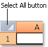

In Excel, you can select cell contents of one or more cells, rows and columns.
Click on a cell to select it. Or use the keyboard to navigate to it and select it.
To select a range, select a cell, then with the left mouse button pressed, drag over the other cells.
Or use the Shift + arrow keys to select the range.
To select non-adjacent cells and cell ranges, hold Ctrl and select the cells.
Select the letter at the top to select the entire column. Or click on any cell in the column and then press Ctrl + Space.
Select the row number to select the entire row. Or click on any cell in the row and then press Shift + Space.
To select non-adjacent rows or columns, hold Ctrl and select the row or column numbers.
To select a list or table, select a cell in the list or table and press Ctrl + A.
To select the entire worksheet, click the Select All button at the top left corner.
